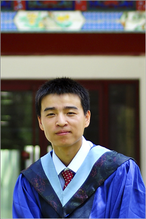

Curriculum Vitae [PDF]
Education
- 2011–2017: Ph.D., Advisor: Prof. Zhengyu Liu
Atmospheric and Oceanic Sciences, UW-Madison, Madison, WI, USA
- 2008–2011: Master of Science, Advisor: Prof. Haijun Yang
Atmospheric and Oceanic Sciences, Peking University, Beijing, China
- 2004-2008: Bachelor of Science
Atmospheric Sciences, Peking University, Beijing, China
Professional Positions
- 2017–presnet: Postdoctoral Research Fellow, University of Michigan
- 2011–2017: Graduate Research Assistant, UW-Madison